实验原理¶
如何阅读本页
- 这页聚焦
Lab4三个任务最需要的虚拟内存背景。 - 建议你边读边问自己 3 个问题：
vmprint()打印出来的多级结构到底对应什么？- 为什么“每个进程一张独立内核页表”会连带影响调度器和内核栈？
- 为什么把用户映射并入独立内核页表后，可以减少软件模拟地址翻译？
本实验一句话总结
Lab4 的核心，不是“学会画页表”，而是弄清楚三件事：
- 当前 CPU 正在使用哪张页表；
- 这张页表里到底映射了什么；
- 这会直接决定内核能访问哪些地址。
1. 虚拟内存管理¶
读完这一部分，你至少应该能回答
- 虚拟地址和物理地址是什么关系？
- 页、页框、页表分别在描述什么？
- 一张页表要怎样才会真正生效？
这一部分只做一个和实验直接相关的快速回顾。
1.1 地址空间¶
每个进程首先看到的，都是自己的 虚拟地址空间。程序里出现的指针、程序计数器、栈地址，本质上都是虚拟地址；真正访问内存前，硬件会依据当前页表把它翻译成 物理地址。
xv6 正是靠这层翻译同时做到两件事：
- 不同进程彼此隔离，看起来像各自拥有一整套地址空间；
- 多个进程最终又能复用同一份物理内存。
1.2 数据结构¶
系统按 页（page） 为单位管理映射关系。在 xv6 / RISC-V Sv39 中，一页大小是 4KB。
先把几个最基本的名词分清：
- 页：虚拟地址空间里的 4KB 块；
- 页框：物理内存里的 4KB 块；
- 页表：记录“哪个虚拟页映射到哪个物理页框，以及权限如何”的数据结构。
如果你只想先抓住“分页”最核心的形状，可以先把它理解成“ 页号 + 页内偏移 ”。下面这张传统分页示意图虽然画的是 32 位机器，但这个基本想法和 xv6 是一致的：
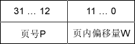
1.3 使用方法¶
页表本身只是放在内存里的一组数据。要让它真正生效，操作系统还需要把“当前该使用哪张页表”告诉硬件。
在 RISC-V 中，这件事主要靠寄存器 satp 完成。可以先把它粗略理解成：
satp记录了 当前启用的页表根地址；- CPU 之后发出的取指、读数据、写数据等访存操作，都会先把地址当成 虚拟地址；
- 硬件会根据
satp指向的页表，自动完成地址翻译，再去访问真正的物理内存。
可以先把整个过程记成下面这样
- 操作系统先在内存中建立好一张页表；
- 把这张页表的根地址写入
satp； - 此后 CPU 就会按这张页表解释虚拟地址；
- 如果页表里有对应映射，且权限允许，访问成功；
- 如果没有映射，或权限不对，就会触发异常。
2. 页表¶
读完这一部分，你至少应该能回答
- Sv39 把一个虚拟地址拆成哪几段？
- 三级页表里，非叶子项和叶子项分别存什么？
- 硬件怎样根据
satp一步步完成地址翻译？
2.1 页表是什么¶
对 xv6 来说，页表不是“一张大平表”，而是一棵 三级页表树。CPU 先从 satp 找到根页表，再根据虚拟地址里的索引逐级向下走，最后定位到真正的物理页。
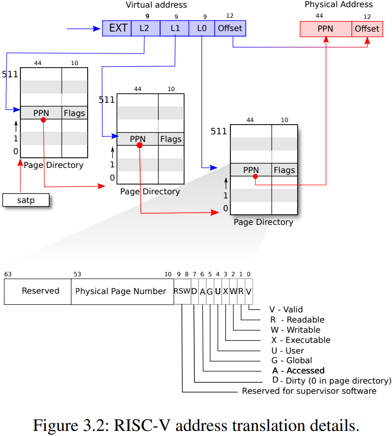
xv6 采用的是 RISC-V 的 Sv39 页表格式。名字里的 39，指的就是参与地址翻译的虚拟地址低 39 位。
2.2 页表的数据结构（重要）¶
2.2.1 虚实地址¶
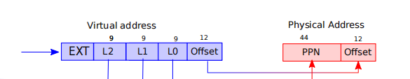
在 Sv39 中，一个虚拟地址可以先粗略拆成四段：L2、L1、L0、Offset。
L2：根页表索引；L1：次页表索引；L0：叶子页表索引；Offset：页内偏移。
前 3 段用来逐级找页表项，最后的 Offset 不参与“查哪一页”，它只是表示“在这一页里的第几个字节”。所以地址翻译完成前后， 页内偏移保持不变 。
如果你学过理论课里的“页目录号 / 页号”叫法，也可以这样对应：
L2、L1对应上层目录索引；L0对应最后一级页表索引。
2.2.2 页表¶
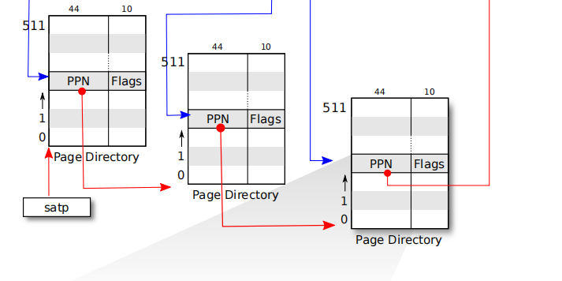
Sv39 使用三级页表：根页表、次页表、叶子页表。
每一级页表本身都占一个 4KB 页；每个表项 8 字节，所以一个页表页有 4096 / 8 = 512 = 2^9 个表项。因此，索引一个页表页正好需要 9 位，这也就是 L2 / L1 / L0 都是 9 位的原因。
2.2.3 页表项¶
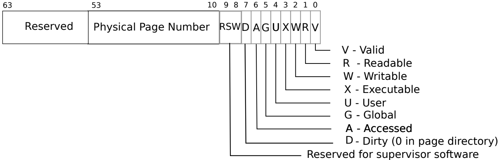
一个页表项（PTE）里，最值得先关注的是两部分：
PPN：物理页号，也就是最终物理地址高位的来源；Flags：权限与状态位。
对 Lab4 来说，下面几个标志位最重要：
V：有效位。为 1 表示这个表项有效；R / W / X：读 / 写 / 执行权限；U：是否允许用户态访问。
怎么判断它是“下一层页表”还是“最终映射”？
- 如果
PTE_V = 0，说明这个表项无效，直接跳过； - 如果
PTE_V = 1且R/W/X三位全是0，说明它指向 下一层页表 ； - 如果
PTE_V = 1且R/W/X中至少有一位是1，说明它已经是 最终映射 ，指向真正的物理页。
在 Lab4 任务一里，你写 vmprint() 时，通常就是按这个规则决定：当前项是继续往下递归，还是直接把它当作叶子映射打印出来。
其中 U 位和任务三关系最大：如果某个映射在内核页表里仍保留 U=1，内核未必就能直接访问它，后面在 3.3.2 会再说。
理论课里有时会区分页目录项和页表项，但在 xv6 的实现里，它们本质上是同一种 64 位结构，只是“处在哪一级、承担什么角色”不同。
PTE 里最核心的是 PPN 和标志位。对应到 xv6 代码里，经常会看到下面这两个宏：
#define PA2PTE(pa) ((((uint64)pa) >> 12) << 10)
#define PTE2PA(pte) (((pte) >> 10) << 12)
可以这样理解：
PA2PTE(pa)：把物理地址右移 12 位，去掉页内偏移，只保留物理页号；再左移 10 位，把它放进 PTE 的PPN字段。PTE2PA(pte)：把 PTE 右移 10 位，取出PPN；再左移 12 位，还原成对应物理页的起始地址。
2.3 虚实地址翻译流程¶
现在我们来将其串联起来，看看对应的虚拟地址是怎样翻译成物理地址的：
- 获得一个虚拟地址。根页表基地址已经被装填至寄存器
satp中。 - 通过
satp找到根页表的物理页帧号，转成物理地址（Offset为0），通过虚拟地址的L2索引，找到对应的页表项。 - 通过页表项找到 次页表 的物理页帧号，转成物理地址（
Offset为0），通过虚拟地址的L1索引，找到对应的页表项。 - 通过页表项找到 叶子页表 的物理页帧号，转成物理地址（
Offset为0），通过虚拟地址的L0索引，找到对应的页表项。 - 通过页表项找到 物理地址 的物理页帧号，再结合虚拟地址的
Offset，得到最终的物理地址（此时Offset与虚拟地址中的Offset相同）。
3. xv6中的虚拟内存管理¶
xv6 中的页表是怎样被实际使用的
前两节说的是“页表一般怎样工作”；接下来把视角切到 xv6 具体实现，重点看三件事：
- 原版 xv6 的用户页表和内核页表怎样分工；
- 为什么任务二必须处理内核页表切换；
- 为什么任务三能用新的映射方式减少软件模拟地址翻译。
先看一张整体图：
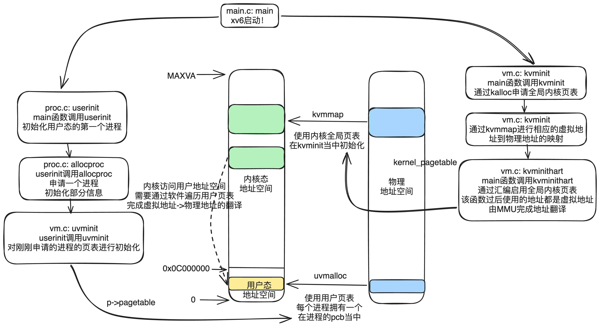
xv6 启动时，会先通过 kvminit() 创建 全局内核页表 ，再通过 kvminithart() 启用它。之后，userinit() 会创建第一个用户进程，并建立它自己的 用户页表 。
这两张页表都在做“虚拟地址到物理地址的映射”，但它们映射的内容并不相同。原版 xv6 正是靠这种分工，区分了“用户程序能看见什么”和“内核态能看见什么”。
3.1 用户内核双页表¶
原版 xv6 的页表分工
- 用户程序运行时，用的是 当前进程自己的用户页表 ；
- 进入内核后，用的是 所有进程共享的全局内核页表 。
也就是说，原版 xv6 是“ 每个进程一张用户页表，所有进程共享一张内核页表 ”。
3.1.1 用户程序页表¶
每个进程都有一张自己的用户页表。用户态运行时，CPU 就靠它来解释用户地址。
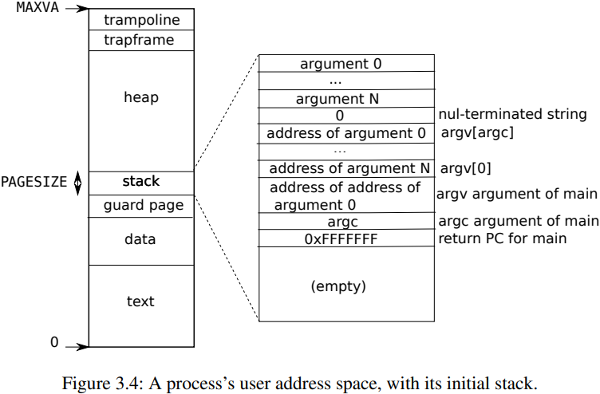
这张页表里主要包含：
- 用户程序自己的代码段、数据段、堆、用户栈；
TRAPFRAME、TRAMPOLINE这类与用户态切换相关的特殊映射（这里说它们是“特殊映射”，是因为它们虽然也出现在用户页表里，但用途并不是给用户程序当普通代码段或数据段来随意使用，而是专门服务于 用户态 / 内核态切换 ）- 但 不包含普通内核代码和内核数据 。
在实现上，exec() 会建立程序初始地址空间；之后如果进程通过 sbrk() 申请更多内存，xv6 会先 kalloc() 出物理页，再通过 mappages() 把新页挂进这张用户页表中。
拓展阅读：用户程序虚拟地址空间分布
TRAMPOLINE：这页里放的是用户态和内核态切换时要执行的那小段汇编代码，例如uservec和userret。它会同时映射到用户页表和内核页表中的同一个高地址，这样切换页表前后，CPU 都能继续执行同一段代码，不会因为页表刚切换就“找不到下一条指令”。TRAPFRAME：这是每个进程自己的一页空间，用来保存用户态寄存器现场。进程从用户态陷入内核时，TRAMPOLINE里的代码会先把用户寄存器写到这里；之后从内核返回用户态时，再从这里恢复。- heap（堆）：可随
sbrk()增长或收缩。 - stack（用户栈）：xv6 只给用户栈分配一个页。
- guard page（守护页）：它紧挨着用户栈，但 故意不建立映射 。这样一来，如果用户栈继续向外增长、越界踩到这页，就不会悄悄覆盖别的数据，而是会立刻触发
page fault。它的作用不是存数据，而是专门用来帮你尽早发现栈溢出。
3.1.2 内核页表¶
原版 xv6 在内核态运行时，使用的是一张 全局共享的内核页表 。这张页表描述的是内核自己的地址空间，而不是某个具体进程的用户地址空间。
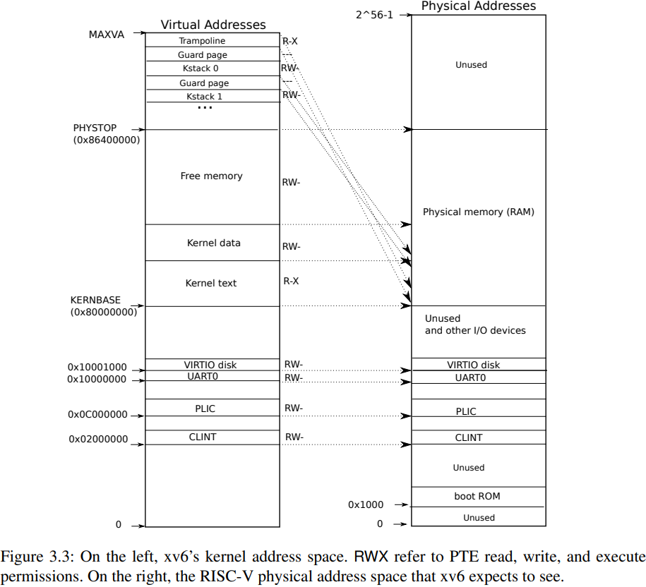
这部分主要由 kernel/vm.c 中的 kvminit() 建好，里面会映射设备寄存器、内核代码段、内核数据段，以及 TRAMPOLINE 等区域。
这张页表有三个特点：
- 这张页表是 全局共享 的；
- 它的大部分映射采用 恒等映射 ，也就是虚拟地址和物理地址相同；
- 它 不包含普通用户空间映射 。
拓展阅读：内核虚拟地址空间-物理地址空间分布
xv6 内核的大部分映射是恒等映射，这让内核在处理物理页和页表时更直接。
但有两类地址的映射方式和普通恒等映射不一样：
trampoline：它对应的是一页专门用于切换用户态 / 内核态的代码。它不是简单的“虚拟地址 = 物理地址”，而是把同一页物理内存额外映射到了内核空间最高处，同时也映射到用户页表中的同一高地址。- 内核栈：它也不是恒等映射。每个进程的内核栈都会被映射到一段固定的高地址区域，下面还会故意留出一个未映射的 guard page，这样栈越界时能更快暴露问题。
另外要记住一点：用户虚拟地址空间和内核虚拟地址空间都落在 Sv39 的 0 ~ MAXVA 范围里，但原版内核页表没有用户映射，所以用户地址在内核态下不能直接访问。
3.2 用户内核双页表的切换¶
在 xv6 中：
- 用户态运行时，用的是 用户页表
- 进入内核后，用的是 内核页表
在原版 xv6 里，所有进程进入内核后共享同一张 全局内核页表。这带来一个直接结果：
内核态下做进程切换时，不需要因为“进程变了”就跟着切换内核页表。
也就是说，调度器 scheduler() 在内核态切换进程时，主要切的是进程上下文，而不是内核页表本身。下面两张图只想说明这一点：
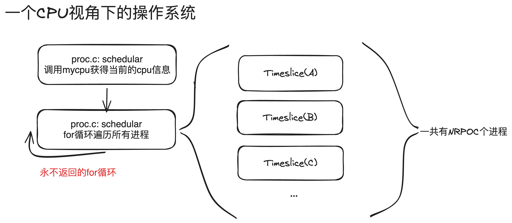
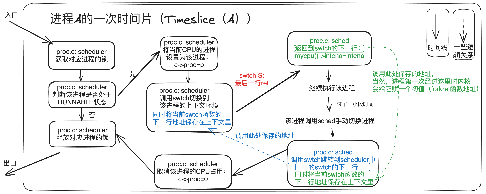
什么是执行流？
可以把“执行流”简单理解成：CPU 当前正在连续执行的那段代码。只要 CPU 启用页表地址，任何执行流要访问自己的代码和数据，都必须有一张与之配套的页表。
xv6 中可以把执行流分成三类：
- 每个进程都有自己的 用户态执行流
- 每个进程进入内核后，也会有自己的 内核态执行流
- 另外还有一个不属于任何用户进程的
scheduler执行流
假设当前 xv6 中有 N 个进程
可以这样数：
- 一共有
2N+1个执行流； - 其中
2N个来自这N个进程各自的“用户态执行流 + 内核态执行流”； - 额外那
1个，是scheduler()自己的执行流。
但原版 xv6 的页表数量并不是 2N+1。原因在于：这些执行流并不都是“一人一张页表”。
N个用户态执行流，各自使用自己的用户页表；- 所有进程的内核态执行流，共享同一张全局内核页表；
scheduler执行流也运行在这张全局内核页表上。
所以，原版 xv6 总共只有 N+1 张页表：
N张用户页表；1张全局内核页表。
原版 xv6 之所以在内核态调度时不必频繁改 satp，就是因为：
- 所有进程的内核态执行流共享一张全局内核页表
scheduler也运行在这张全局内核页表上
更具体地说，进程切换发生在内核态的 swtch 路径上。切换前后，CPU 都还在执行“内核里的代码”，因此仍然可以继续使用这张全局内核页表，不需要因为“换了一个进程”就立刻改写 satp。一直到该进程准备返回用户态时，才会再切回它自己的用户页表。
但一旦你把内核页表改成“每个进程一张”：
- 某个进程在内核态运行时，应使用它自己的内核页表
scheduler自己又仍然需要一张可用的页表
这时，页表数量也会变成 2N+1：
N张用户页表；N张“每个进程自己的内核页表”；1张保留下来的全局内核页表，供scheduler等内核公共执行路径使用。
这就是为什么 Lab4 任务二里，调度器必须在合适的时机切换内核页表，而不是只切换进程上下文。
页表根地址最终都要装进 satp。原版 xv6 中：
- 用户页表地址保存在
struct proc的pagetable中； - 全局内核页表地址保存在
kernel/vm.c的kernel_pagetable中。
引入独立内核页表后，你也需要为“每个进程自己的内核页表根地址”找到一个稳定的保存位置。
3.3 内核对用户空间的访问¶
3.3.1 地址翻译与TLB页表¶
CPU 发出访存请求时，MMU（Memory Management Unit，内存管理单元） 会按照当前页表自动完成地址翻译。为了避免每次都从根页表一路查到叶子页表，处理器通常还会把最近用过的翻译结果缓存在 TLB（Translation Lookaside Buffer，快表） 里。
TLB 在做什么？为什么切页表后要刷新？
如果没有 TLB，那么每次访存时，硬件都要按页表从根页表一路查到叶子页表。对 Sv39 来说，这通常意味着：
- 先读根页表；
- 再读次页表；
- 再读叶子页表；
- 最后才能访问真正的数据。
也就是说，一次本来只想“读 / 写目标地址”的操作，可能会先额外引出 3 次内存访问去查页表，访存延迟会明显变大。
TLB 的作用，就是把最近用过的“虚拟地址 -> 物理地址”翻译结果先缓存起来。这样再次访问时，硬件就不必每次都重新走完整个查表过程。
但切换页表后，TLB 里仍然可能留着 旧页表下的翻译结果 。如果继续使用这些旧缓存，地址翻译就可能错乱。
所以，在 RISC-V 中做一次完整页表切换时，通常要：
- 用
w_satp()切到新页表； - 再执行
sfence_vma()，让旧的翻译缓存失效。
这里的“刷新”，可以直观理解成：告诉 CPU，之前缓存的那些地址翻译结果不要再用了；后面如果又访问这些虚拟地址，就按当前页表重新查。
在 xv6 的 kernel/vm.c 中，可以看到对应实现：
void
kvminithart()
{
w_satp(MAKE_SATP(kernel_pagetable));
sfence_vma();
}
3.3.2 内核对用户空间访问的挑战与解决方案¶
这里正是任务三的出发点。
在原版 xv6 中，内核页表 不包含用户地址空间的映射。因此，当内核拿到一个“用户传来的指针”时，硬件并不能直接帮你把它翻译出来。原因很简单：当前 CPU 正在使用的是内核页表，但这张页表里根本没有那段用户虚拟地址的映射，所以硬件无法直接完成地址翻译。
于是原版 xv6 只能换一种做法：
- 先找到这个进程自己的用户页表；
- 再按硬件查页表的思路，一层一层手动遍历；
- 先把用户虚拟地址翻译成物理地址；
- 然后内核再去访问对应物理页。
这就是所谓的 软件模拟地址翻译。
举个例子：copyout()
例如在系统调用中，用户程序传给内核的指针往往指向用户空间。内核如果想读写这段数据，就必须先把这个用户虚拟地址翻译出来。感兴趣的话，可以顺着 copyout() -> walkaddr() -> walk() 看原版 xv6 是怎样手动完成这件事的。
其中，walk()（kernel/vm.c）做的就是“按 Sv39 的三级页表规则逐级查找 PTE”，本质上是在软件里模仿硬件页表遍历过程。
而任务三想做的，就是把这条慢路径尽量去掉：
- 如果独立内核页表里也包含了用户空间的映射；
- 那么内核在使用这张页表时，就可以直接访问对应的用户虚拟地址；
- 很多原本必须“先查页表、再拿物理地址”的操作，就可以简化成 用内核页表直接访问对应的用户虚拟地址 。
但这里还有一个非常容易踩坑的点：
把用户映射复制进内核页表，不等于内核就一定能直接访问它。
如果复制过去的页表项仍然保留 U=1，内核态也未必能直接访问它。对 RISC-V 来说，U=1 表示这是一页“用户页”；在默认情况下，Supervisor 模式并不能直接访问这样的页面。常见处理思路有两种：
- 让内核页表里的对应映射
U=0。更具体地说，就是在复制用户映射到内核页表时，不直接照搬用户 PTE，而是把其中的U位清掉。这样，这条映射在内核页表里就不再被硬件视为“用户页”，内核可以直接访问；但用户页表本身仍然保留原来的U=1，用户态访问规则不变。 - 借助 RISC-V
sstatus寄存器中的SUM位：当SUM=0时，内核不能直接访问带U=1的用户页；当SUM=1时，内核才可以访问这些页面。因此，如果你选择保留U=1，通常就需要在真正访问用户内存之前临时打开SUM，访问完成后再恢复。需要注意的是，xv6 里通常并没有现成的SSTATUS_SUM宏，实验中往往需要你自己在合适的位置补上这个定义。关于sstatus和SUM的定义，可以参考 RISC-V 手册。
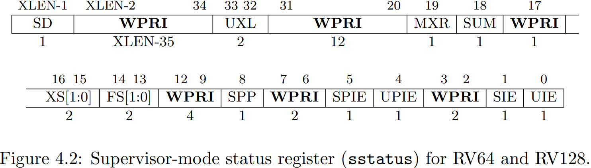
3.4 内核栈¶
进程进入内核后，还需要一段专属栈空间维持内核态执行，这就是 内核栈 。因为不同进程在内核中的执行互不相同，所以每个进程都应当有自己的内核栈。
在原版 xv6 中，这些内核栈的映射都放在 全局内核页表 里。
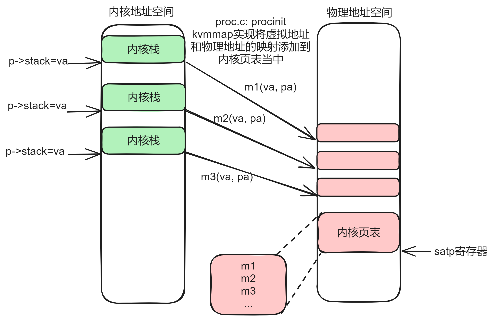
对应代码在 kernel/proc.c 的 procinit() 中：
1 2 3 4 5 6 7 8 9 10 | |
这段代码说明了下面几件事：
procinit()运行在 xv6 的初始化阶段，因此系统启动时就会为NPROC个进程槽位把内核栈先分配好；- 每个进程的内核栈虚拟地址是按
KSTACK(i)规则固定计算出来的。这个宏通常写成：
#define KSTACK(i) (TRAMPOLINE - ((i) + 1) * 2 * PGSIZE)
这里的含义是：每个进程按顺序占用 2 * PGSIZE 的虚拟地址跨度，其中上面 1 页是真正的内核栈，下面 1 页留作未映射的 guard page。所以 i = 0, 1, 2, ... 时，各个进程的内核栈会从 TRAMPOLINE 下方依次向低地址排开，彼此之间自动隔着一个 guard page。
- 原版 xv6 把这些映射统一建立在 全局内核页表 里。
任务二里最容易漏掉的点
当你把“全局内核页表”改成“每个进程一张独立内核页表”后，每个进程自己的内核页表里，也必须包含它自己的内核栈映射 。
否则，一旦 CPU 切到这张独立内核页表并开始在内核态执行，该进程连自己的内核栈都访问不到。
3.5 用户页表和内核页表合并的一个重要前提：地址不重合¶
要把“用户映射”和“内核映射”同时放进一张独立内核页表，有一个非常关键的前提：
用户虚拟地址范围不能和内核已经使用的虚拟地址范围重叠。
所以，一个直接的问题是：用户地址上界到底该卡在哪里？
可以先观察 xv6 内核页表的低地址部分。从低地址往上看，前面有一段没有使用；再往上可以看到 CLINT 和 PLIC 这两段设备映射。
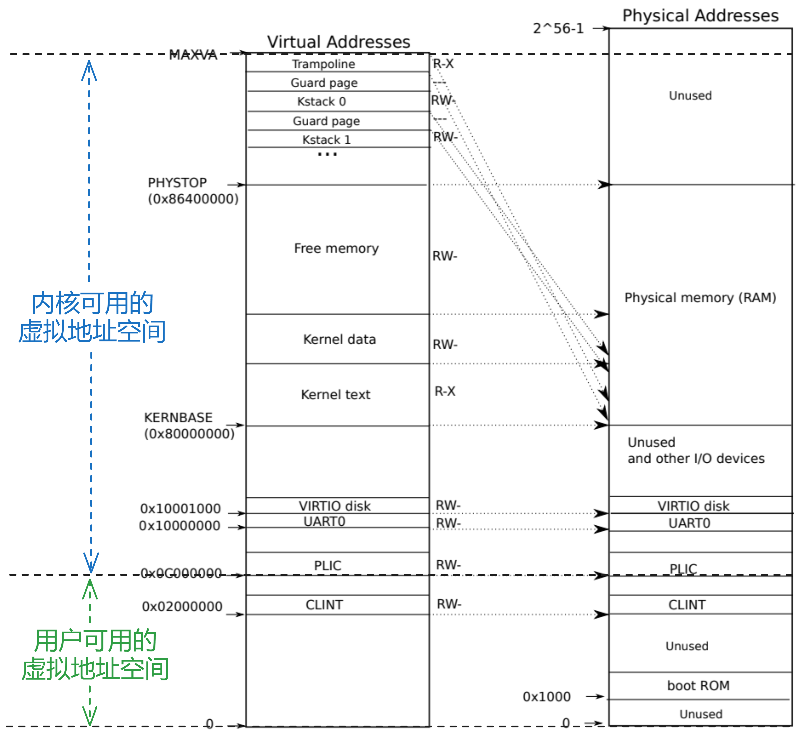
你可以在 kernel/vm.c 的 kvminit() 中看到内核已有的映射，例如：
1 2 3 4 5 | |
这里很容易看错：kvmmap() 的前两个参数是起始虚拟地址和起始物理地址，第三个参数才是映射长度。也就是说，kvmmap(PLIC, PLIC, 0x400000, ...) 里的真正起始地址是 PLIC，而 0x400000 表示“从 PLIC 开始往后映射 4MB”。
在 kernel/memlayout.h 里，可以看到类似下面这样的定义：
#define CLINT 0x2000000L
#define PLIC 0x0c000000L
也就是说，PLIC 这段设备映射的起始地址就是 0x0C000000。
这里还要再解释一个容易困惑的点：CLINT 的地址明明更低，为什么实验里通常还是拿 PLIC 当边界？
原因在于：
CLINT是 Core-Local Interruptor ，主要和每个 CPU 核上的本地定时器、中断触发等底层控制有关。它对应的是一段设备寄存器区域，不是普通进程在内核态执行时会像“内核代码 / 内核数据 / 内核栈”那样经常直接访问的常规地址空间。- 对原版 全局内核页表 来说，把
CLINT映射进去是合理的，因为它在系统层面仍然和本地定时器 / 中断有关；只是通常不属于每个进程自己的内核执行流必须单独携带的地址空间。 - 但在这个实验里，我们讨论的是“给每个进程创建一张 独立内核页表 ”。这张页表的目标，不是把原版全局内核页表的所有低层设备映射都原样复制一遍，而是保证“这个进程在内核态运行时所需的那部分地址空间”是可用的。
- 从这个角度看，
CLINT这段区域通常不需要复制到每个进程自己的独立内核页表里；把它继续留在原来的全局内核页表中即可。这样既不影响实验要实现的功能，也能把更低的一段虚拟地址空间留给用户映射使用。
这样一来，对本实验真正使用的独立内核页表来说，低地址里首先需要保留的固定映射通常就是 PLIC 这一段。
所以，这里并不是在说“所有内核地址都从 0x0C000000 才开始”，而是在说：
对本实验的独立内核页表来说，用户地址可用范围通常到
PLIC = 0x0C000000为止。
于是，一个简单而安全的约束就是：
- 用户页表仍然从
0x0开始按需增长； - 但用户可用虚拟地址上界必须限制在
0x0C000000之下。
这样，在任务三把用户映射并入独立内核页表时，就不会和已有的内核映射撞到一起。
把用户地址上界卡在这里，会不会太紧？
这个上界其实已经不小：0x0C000000 = 12 × 16^6 B = 12 × 16MB = 192MB。
对 xv6 实验里的用户程序来说，代码段、数据段、堆和栈通常都远达不到这个量级；而且在实验环境里，系统往往还会更早受到物理内存大小的限制，所以这里的虚拟地址上界通常不会先成为问题。